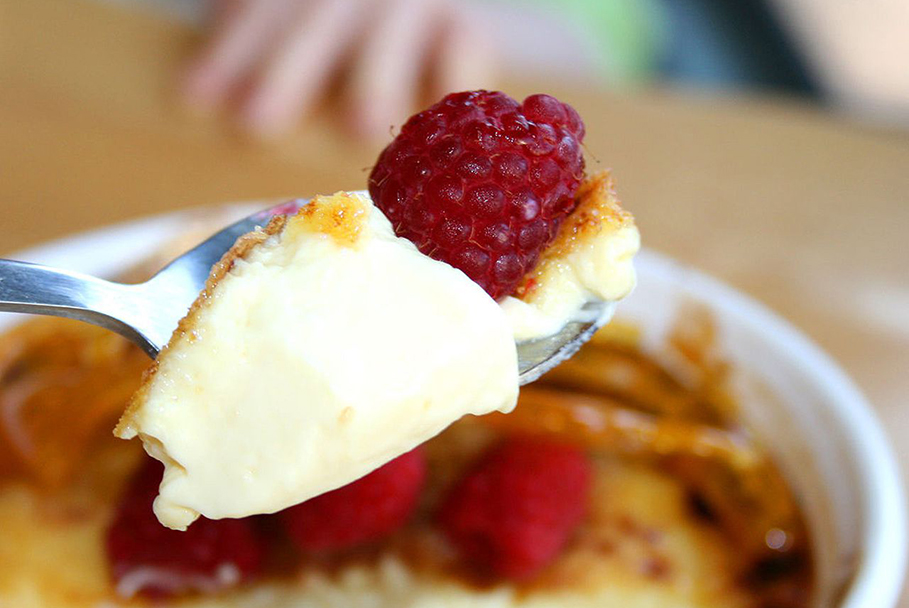

crème brûlée.

Description
Crème brûlée is a lovely dessert to serve when entertaining.
It's delicious served with either fresh mangos sprinkled with rum or strawberries with Grand Marnier or Cointreau.
This classic crème brûlée recipe is on par with what you'd get at a 5-star restaurant, but it's surprisingly easy to make at home!
Ingredients
- 6 egg yolks
- 6 tablespoons white sugar, divided
- 1/2teaspoon vanilla extract
- 2 1/2cups heavy cream
- 2 tablespoons brown sugar
Steps
- Preheat the oven to 300 degrees F (150 degrees C).
- Whisk egg yolks, 4 tablespoons white sugar, and vanilla extract in a mixing bowl until thick and creamy; set aside.
- Pour mixture into the top pan of a double boiler. Stir over simmering water until mixture lightly coats the back of a spoon, about 3 minutes. Pour into a shallow heat-proof dish.
- Bake in the preheated oven until custard is set, about 30 minutes. Let cool to room temperature, then refrigerate until chilled, at least 1 hour or overnight.
- Turn the oven to broil.
- Combine remaining 2 tablespoons white sugar and brown sugar in a small bowl. Sprinkle mixture evenly over custard. Place dish under the broiler until sugar melts and caramelizes, about 2 minutes. Watch carefully so as not to burn.
- Allow to cool slightly, then refrigerate until custard is set again, about 10 minutes.
Last step...enjoy it!